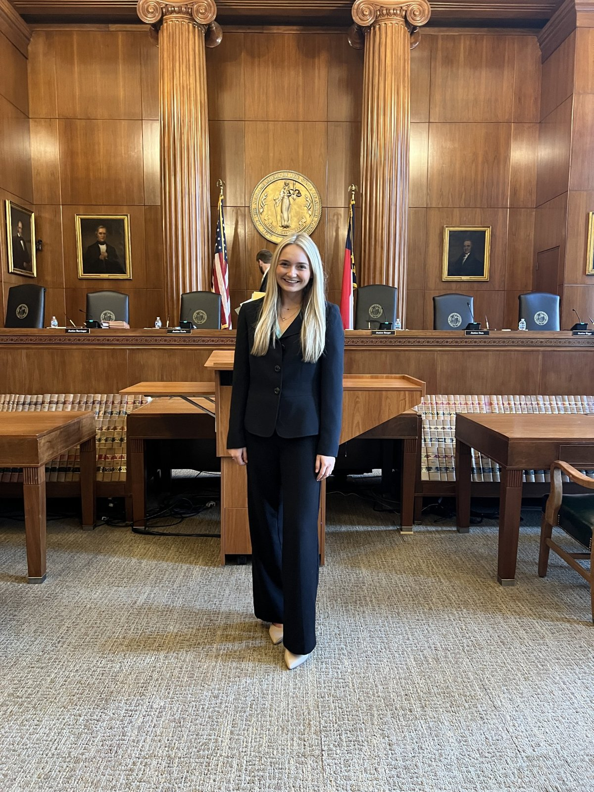
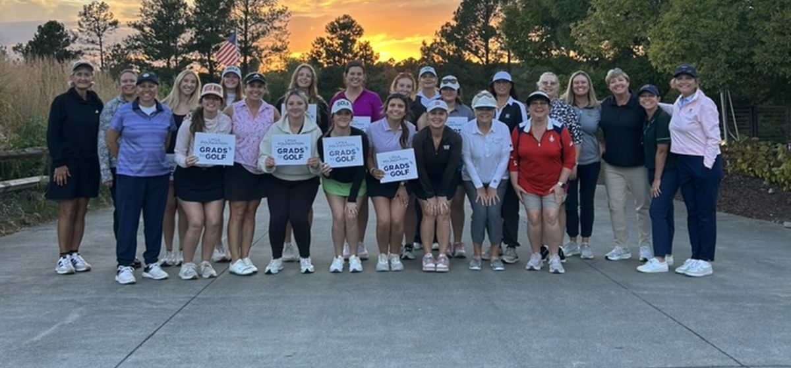

04
NOV · DEADLINE
Harvest Ball registration
Free agribusiness summit, panels, and gala in Raleigh, Nov. 6–8.
Register ›
The first ABM Interview Competition. Practice the interview before the one that counts, and win something for it.
Round 1 is 15 minutes with ABM faculty and staff judges. Finalists face company recruiters.
Sign up by Thu., Nov. 5 ›Free agribusiness summit, panels, and gala in Raleigh, Nov. 6–8.
Register ›Pick your time slot for Nov. 13.
Sign up ›Help other students through a class you’ve taken.
Apply ›10 a.m.–3 p.m. Check in at Nelson 3313.
Details ›
Last spring, senior Peyton Sharp worked in Justice Trey Allen’s chambers at the state’s highest court, drafting petitions, researching cases, and sitting in on oral arguments. She found it through a LinkedIn post, then wrote to every justice to ask about openings.
First-year Brandon Estevez was chosen as a Farm Foundation Cultivator, which is rare for a first-year. He’ll present his avocado supply chain research to agribusiness and policy leaders in January.
Meet the Cultivators ›
In its seventh year, the workshop led by Aaron Messer of Bayer Crop Science ended with sales pitches. “The most beneficial experience I have had at NC State,” said Aimee Dearinger.
Read the story ›Eighteen students, freshmen to seniors, practiced interviewing with PJ Faust, Brandon “Brew” Brewington, and ABM alumnus John Andrews of Terra Green Precision Landscapes.
Read Matt Smith’s story ›
Lindsey Hockstra, Wade McCallum, and Meredith Newton pitched a marketing cooperative for NC oysters at the free workshop in Morehead City.
Read the story ›
ABM women learned golf skills and how to build professional relationships on the course, through a five-week program from the LPGA Foundation and John Deere.
Read Lindsey’s story ›Agriculture and food, sales and marketing, finance and accounting, operations, and policy. Filter by field and find your next move.
See all internships and jobs ›Noon to 1 with two other ABM students. Bring an idea, a question, or just come to talk. Lunch is on us. Three spots.
Sign up ›Students who finish 301 first come into 336 better prepared, with the concepts and math practice 301 gives them.
The photos, the people, and what’s happening around the major.
Instagram ›